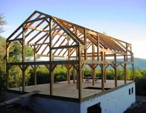
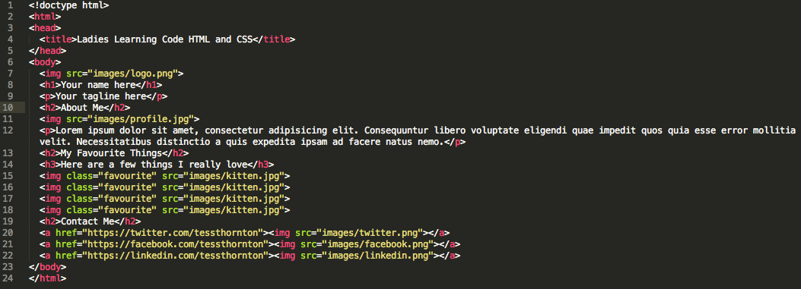
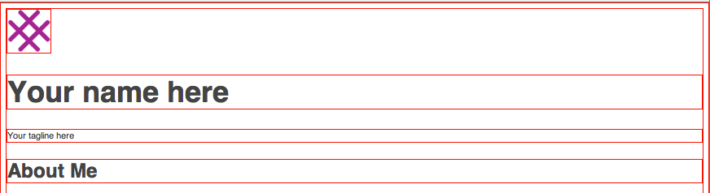

Bienvenues à l'intruduction de Ladies Learning Code
HTML & CSS
( Interactive code slides thanks to CoderDeck. Also, thanks to Pearl Chen and Mark Reale for creating the foundation for today's content. )
( Interactive code slides thanks to CoderDeck. Also, thanks to Pearl Chen and Mark Reale for creating the foundation for today's content. )
Cliquez ici pour découvrir le projet
Vous devriez avoir téléchargé les items suivants :
La fonction principale d'un navigateur est de présenter la « ressource web » de votre choix dans la fenêtre de navigation lorsque vous sollicitez un serveur web. La « ressource web » est généralement un document HTML, mais il peut s'agir d'un PDF, d'une image ou d'un autre type de document.
Nous aborderons ce sujet bientôt. Pour l'instant, veuillez jeter un oeil à notre exemple. Allez sur http://ladieslearningcode.com. Faites un clique droit et sélectionnez « Afficher le code source de la page ». Ce que vous verrez est du HTLM.
Nous apprendrons aujourd'hui comment écrire notre propre HTML. Pour l'instant, nous apprendrons comment ouvrir un document HTML (comme ceux que nous créerons plus tard) dans notre navigateur.
C'est le contenu de votre page
Nous utilisons le HTML pour décrire chaque partie de la page web au navigateur pour que notre contenu soit présenté comme nous le souhaitons. Nous aidons le navigateur à comprendre comment nous voulons que le contenu soit présenté en utilisant des balises/ des tags. Voici quelques exemples de balises que vous avez sûrement déjà vus auparavant :
Pour créer un fichier HTML ce dernier doit être composé de la l'extension .hmtl ( comme un fichier PDF possède l'extension .pdf à la fin du document).
Quand nous écrivons du HTML, nous créons des éléments HTML en mettant notre contenu entre des balises (« tags » en anglais). Ces balises décrivent la disposition du contenu, pas leur apparence ni leur style. Nous utilisons différentes balises pour créer de multiples éléments et ensemble deviennent notre document HTML.
Il est important de saisir que le HTML est important pour la structure du document et qu'il a très peu avoir avec le visuel du résultat final. Les éléments de style, c'est avec le CSS que nous les créerons.
Il est important de créer un code HTML clair et cohérent dans sa sémantique et sa structure avant d'entreprendre quoi que ce soit d'autre. Quand on écrit du HTML on structure le projet et on y incorpore le contenu, nous n'en sommes pas à l'étape du design ni du style (cela sera le rôle du CSS).
Voici donc quelques balises que vous ne devriez JAMAIS utiliser :
C'est ce qui rendra votre site plaisant au regard !
CSS (Cascading Style Sheets) est ce qui rendra votre site agréable à regarder.
Pendant que le HTML définit la structure des différentes pages de votre site, le CSS indique l'emplacement et le look des différents éléments qui le constituent.
Par exemple, p signifie paragraphe en HTML. Si nous voulons que tous nos paragraphes soient rouge et soulignés, nous devrons écrire ceci :
p {
color: red;
text-decoration: underline;
}
Pour indiquer que nous ajoutons du CSS à notre fichier blank.html nous devons trouver les balises <style> ouvrantes et fermantes entre les balises <head> ouvrantes et fermantes.
<!doctype html>
<head>
<title>Ladies Learning Code HTML and CSS</title>
<style>
p {
color: red;
text-decoration: underline;
}
</style>
</head>
<body>
<p>Ceci est un paragraphe</p>
</body>
</html>
Vous venez de réaliser votre première page web !
HTML + CSS = page web
Le HTML et le CSS sont comme des langues et tout comme le Français ou l'Italien, ces langues ont leurs propres règles. Bien sûr il faut du temps pour bien maîtriser ces langues. Ne vous en faites pas si vous ne comprenez pas tout du premier coup !
Ceci:

Deviens cela:

Il est temps d'écrire un peu de HTML (ce que nous appelons le « markup »).
Vous pouvez enlever ce que nous avons écrit entre les balises <style> et </style> pour l'instant. Gardez <style> et </style> ici!
La structure d'une page web est définie par des balises HTML. Des chevrons simples définissent les balises, comme ceci :
<Balise>
Imaginez que les balises HTML sont comme les poutres structurales d'une maison. C'est ce qui construit et structure la page web.

Les balises HTML viennent généralement par paires -- donc une balises ouvrante et une balise fermante avec une barre oblique.
<balise></balise>
Un exemple que vous avez déjà vu :
<!DOCTYPE html>
<html>
<head>
<title> </title>
</head>
<body>
</body>
</html>
Les balises peuvent être imbriquées les unes dans les autres, comme ici :
<balise><balise></balise></balise>
(On réfère souvent à ce genre de situation en terme d'élément parent et d'élément enfant/ parent node & child nodes.)
Dans l'exemple ci-dessous :
<title> est imbriqué entre les balises <head> ouvrantes et fermantes. Ainsi on peut dire que la balise <head> est un élément parent et que la balise <title> est un élément enfant.<head>est aussi en même temps un élément enfant de la balise <html>.<html> est toujours l'élément racine, il ne possède pas d'élément parent. <head> et la balise <body> sont au même niveau. Elles sont tous les deux des éléments enfant de la balise<html>. Elles sont comme des soeurs !
<!DOCTYPE html>
<html>
<head>
<title> </title>
</head>
<body>
</body>
</html>
<!DOCTYPE html>
<html>
<head>
<title> </title>
</head>
<body>
</body>
</html>
<head> et dans le <body>?La principale différence est que les éléments que vous placerez dans le <body> apparaîtrons sur votre page web. Les éléments que vous mettrez dans le <head> ne seront jamais visible sur votre page web. Vous pouvez imaginer que ce que vous écrirez dans le <head> est une façon de communiquer secrètement avec le navigateur. Par exemple, la feuille de style de votre page web s'inscrit à cet endroit puisque nous ne voulons pas que le code du style apparaisse sur la page, mais nous souhaitons que le navigateur l'interprète et l'applique adéquatement.
<title> et observez les changements dans votre navigateur.<h1> et</h1>, <h2> et </h2> et vous pouvez même expérimenter avec h3, h4, h5 et h6 si vous le souhaitez.<a href="http://link.com">Cliquez ici !</a>
Ne vous en faites pas trop avec l'ordre de votre code pour l'instant. L'important est de coder !
N'oubliez pas de sauvegarder votre fichier et de rafraîchir souvent la page affichée dans votre navigateur pour votre code en action !
Les attributs sont une autre partie très importante du code HTML.
Un attribut HTML modifie un élément HMTL. Il est composé d'un nom et d'une valeur séparée par un = et écrit à l'intérieur des chevrons de la balise ouvrante, après le nom de la balise.
<balise attribut="valeur">(contenu modifié par la valeur)</balise>Ici, « balise » représente l'élément HTML et « attribut » représente le nom de l'attribut.
Voici un exemple d'un attribut que nous avons déjà vu aujourd'hui :
<a href="link.com">Cliquez ici !</a>Dans ce cas, « a » est la balise d'hyperlien, « href » est l'attribut et « http://link.com » est la valeur.
Le résultat final/ l'output (ce que vous verrez dans votre navigateur) pour cet exercice est sur la prochaine diapo. Écrivez le HTML
Un conseil : vous devriez utiliser <h1> et </h1> qu'une seule fois, <h2> et </h2> trois fois, <h3> et </h3> qu'une seule fois.
Vous pouvez générer votre propre faux texte ici:http://www.lipsum.com. Ou encore, essayez Cupcake Ipsum ou Bacon Ipsum, pour faire différent.
Apprenons comment ajouter des images à notre page web. Vous remarquerez que les balises d'image sont particulières dans la mesure où elles sont autofermantes/ self-closing. La balise d'image ne possède pas de balise fermante.
Débutons en ajoutant une image déjà en ligne. Voici le code :
<img src="http://placekitten.com/g/200/200">
Essayez de copier/coller cette ligne de code dans votre projet juste sous la balise ouvrante<body>.
Ensuite, essayez de trouver différentes images sur internet et remplacez celle du chaton.
Il existe une autre façon d'ajouter des images si vos images ne sont pas déjà en ligne et qu'elles sont dans un fichier dans votre ordinateur.
Dans votre dossier de projet, au même niveau que votre fichier « blank.html » vous trouverez une image appelée « logo.png ». Pour ajouter cette image sur votre page web vous devrez inscrire ce code :
<img src="logo.png">
Copiez/collez cette ligne de code dans votre projet, juste sous la balise ouvrante <body>.
Ensuite, remplacez cette image avec une des images du dossier « Images » dans le dossier du projet. Un conseil : la solution est semblable, mais vous devrez ajouter « images/ » devant le nom de l'image. ( Puisqu'« Images » est le nom du dossier, on doit avertir le navigateur pour qu'il sache où trouver le fichier).
Le résultat final/ l'output (ce que vous verrez dans votre navigateur) pour cet exercice est sur la prochaine diapo. Écrivez le HTML.
Un conseil : l’image du logo s'appelle « logo.png » et l'exemple d'avatar s'appelle « profile.jpg ». Vous les trouverez tous les deux dans le dossier « images ».

Il y a 3 principaux types d'images : jpg, png et gif. Voici comment on les utilise :

Le résultat final/ l'output (ce que vous verrez dans votre navigateur) pour cet exercice est sur la prochaine diapo.
Vous avez écrit tout le HTML nécessaire au projet d'aujourd'hui ! Votre « markup » devrait ressembler à ceci :
Avez-vous remarqué comment le markup de la diapo précédente était vraiment clair et facile à lire ? Tout à été pensé en conséquence !
Prenez un moment pour mettre de l'ordre dans votre code pour qu'il soit identique à celui présenté en exemple. Quand nous aurons débuté le CSS, vous en serez heureux.
Débutons enfin le CSS!
Le CSS est fait de règles en symbiose avec les éléments du HTML (les balises comme <p> et <ul>), pour définir leur style, leur apparence.
Une règle CSS est composée d'un sélecteur et d'une ou plusieurs déclarations
Un sélecteur aide le navigateur à déterminer quel élément sera modifié.
Ça ressemble à ceci :
h2 {}Le sélecteur si dessus sélectionne tous les éléments de type <h2> et y applique un ou des styles. Les styles doivent être mentionnés entre les 2 accolades.
Une déclaration dicte au navigateur quel style nous voulons donner à nos éléments.
Une déclaration est toujours composée de 2 parties : une propriété et une valeur.
Une propriété dicte au navigateur qu'est-ce que nous allons modifier (par exemple : la police de caractère, une couleur, une taille, etc.)
Une valeur dicte au navigateur quelle sera la modification (par exemple : Arial, vert, petit, etc.)
une déclaration ressemble à ceci:
background-color: green;background-color: green;La valeur (la partie après les deux-points) est spécifique au type de propriété.
Par exemple : les propriétés reliées à une taille(height, width) sont généralement exprimées en px (nombre de pixels) alors que les propriétés reliées à une couleur seront spécifiées avec le nom de la couleur ou son code ______.
Il est primordial de respecter la syntaxe du code que vous écrivez : un deux point après le nom de la propriété et un point-virgule après la valeur.
Vous devez rédiger votre CSS entre 2 balises <style></style>.
Vous devez ajouter ces balises dans le <head> de votre document HTML, comme ceci :
<html>
<head>
<style>
h2 {
background-color: green;
}
</style>
</head>
<body>
</body>
</html>
Lorsque nous rassemblons le sélecteur et les déclarations, cela nous donne une règle CSS, comme ceci:
h2 {
background-color: green;
}
Cette règle sélectionnera tous les éléments de type <h2> pour modifier leur arrière-plan afin qu'il soit vert.
Essayer de copier/coller ce code entre les balises <style> de votre projet et rafraîchissez la page dans votre navigateur.
Il est possible d'ajouter plusieurs déclarations (propriétés: valeurs; sets) à un des sélecteurs pour modifier plusieurs propriétés:
h2 {
background-color: green;
font-size: 28px;
}
Soyez certains que vous terminez chaque déclaration par un point-virgule !
Essayez de remplacer la règle précédente pour le <h2> avec celle-ci et rafraîchissez la page dans votre navigateur.
Ensuite, enlevez tous le code que vous avez ajouté entre les balises <style>. Nous en ajouterons d'autres bientôt !
<style> entre les balises <head> de votre fichier blank.html<body>color: avec une la valeur bleue/ blue;
body {
color: blue;
}
Tout le texte de la page est maintenant bleu puisque la balise <body> est la plus haute dans la hiérarchie que l'on peut observer sur notre page. Ainsi, la propriété de couleur/ color s'applique sur le <body> ET tous ses éléments enfants incluant tous les titres, les paragraphes et les listes.
Changeons la couleur du texte pour qu'il soit plus facile à lire.
Nous devrons utiliser un code hex, qui est un code à 6 caractères qui décrit une couleur.
Il n'est pas nécessaire de savoir comment ce code se compose, souvenez-vous simplement qu'il doit toujours débuter par un signe #. Il peut être pratique de vous souvenir que quelques codes HEX pour certaines couleurs de bases:
#FFFFFF#000000#FF0000#00FF00#0000FFLe code pour un beau gris foncé est le#444444. Ajoutons-le !
body {
color: #444444;
}
Jetez un oeil à http://colorpicker.com pour une multitude d'autres couleurs !
Il existe plusieurs propriétés CSS qui nous permettent de modifier l'apparence de notre texte en HTML:
font-sizefont-weightfont-stylefont-familycolorline-heightModifions notre police de caractère pour Helvetica linéal (sans-sérif):
body {
color: #444444;
font-family: Helvetica, Arial, sans-serif;
}
La propriété «font-family» (famille de police) accepte une liste de type de polices: le premier est votre premier choix de police, les autres paraîtrons seulement si le premier choix (dans l'ordre) n'est pas disponible. Toutes les polices ne sont pas disponibles, autant que possible choisissez-en une qui sera web-safe.
Font-sizeSi nous voulions que nos balises <h1> et <h2> soient plus grosses, nous écrirons:
h1 {
font-size: 48px;
}
h2 {
font-size: 32px;
}
Line-HeightNous pouvons modifier la hauteur de l'alignement du texte /line height (ou leading) avec la propriété line-height
line-height spécifie une hauteur équivalente au multiple de la taille de la police choisie. Donc, une valeur de 1.4 signifierait que les lignes seraient 1.4 fois plus hautes que le texte.
p {
line-height: 1.4;
}
Ajoutons des bordures autour de votre photo de profil, votre <img>
img {}
La propriété de la bordure/border possède 3 paramètres importants: la largeur/width, le style/style et la couleur/colour. Donc, si nous voulons une bordure large d'1px, solid(c-a-d une ligne pleine), grise, nous devrons écrire:
img {
border: 1px solid grey;
}
Nos bordures sont maintenant appliquées sur toutes les images de notre page, incluant notre logo. Ce n'est pas ce que nous voulons, nous voudrons donc trouver une façon de sélectionner seulement la photo de profil.
Le HTML nous permet d'ajouter des identificateurs à nos balises pour que nous puissions ensuite les sélectionner. Nous les appelons des « classes »/ class.
Les class sont des attributs que nous ajoutons aux balises.
<p class="classname"></p>
Nous pouvons écrire un sélecteur dans notre CSS pour cibler l'élément auquel nous avons ajouté une classe en utilisant: .
.
p.classname {}
Et ajouter le style désiré uniquement à l'item choisi avec la classe:
p.classname {
color: red;
}
profile à la balise correspondante à votre image de profilimg.profilewidth et height, qui doivent être en px (pixels). Essayez 200 x 200 px. Voici un exemple de comment utiliser le width et le height ci-dessous:
img {
width: 200px;
height: 200px;
}
Votre HTML devrait ressemble à ceci:
<img class="profile" src="images/profile.jpg">
Et votre CSS devrait ressemble à cela:
img.profile {
border: 1px solid grey;
width: 200px;
height:200px;
}
Nous pouvons faire la même chose pour styliser nos images d'objets favoris.
Comme nous voudrons probablement obtenir le même style pour nos 4 images, nous devrons leur ajouter le même nom de classe.
Ajoutez la classe « favorite » à chaque image.
<img class="favourite" src="images/kitten.jpg" >
Ajouter du style à vos images, faites varier leurs width, height, et border.
border-radius: 50%;border: 3px dotted pink;box-shadow: 0 0 4px grey;
img.favourite {
border: 1px solid grey;
width: 200px;
height: 200px;
border-radius: 50%;
}
Le « Box Model » décrit la façon dont le CSS style les dimensions et l'espacement entre les éléments HTML.
Pour comprendre le «Box Model», nous devons comprendre comment les navigateurs «voient» ces éléments HTML.
Pour le navigateur, tous les éléments HTML sont des boîtes rectangulaires.
Si nous montrions les contours de chaque élément d'un document HTML, cela ressemblerait un peu à la prochaine diapo:

En CSS il existe 5 propriétés pour déterminer les dimensions et l'espacement entre ces boîtes:
Margin, padding, border, width, et height (marges, marge intérieure ou rembourrage, largeur et hauteur)
<p>, un <h2>, et un autre <p><h2> et ajouter un arrière-plan rose:
h2 {
border: 1px solid red;
background: pink;
}

Il y a 2 propriétés CSS pour ajouter des espaces autour des éléments: margin, et padding
La propriété margin ajoute de l'espace autour de l'element, en dehors de la bordure :
h2 {
margin: 40px;
}
Ce code ajoute 40px d'espace de chaque côté de l'élément.

Si nous voulons ajouter de l'espace à l'intérieur de la bordure, nous utiliserons la propriété padding:
h2 {
margin: 40px;
padding: 40px;
}
Ce code ajoute 40px d'espace de chaque côté de l'élément, mais à l'intérieur de la bordure.

Ajouter du padding sur un élément, le rendra plus gros, alors qu'ajouter de la margin ajoutera de l'espace autour de l'élément.
Si vous créez un élément large de 100px et ajoutez 40px de padding, l'élément aura, au final, 180px de largeur.
Si vous ajouter 40px de margin à un élément large de 100px, il demeurera large de 100px au final.
Si vous ajoutez une border large d'1px à un élément large de 100px, il deviendra large de 102px.
Si votre élément n'a pas de bordure ou d'arrière-plan, vous ne serez peut-être pas capable de percevoir la différence entre les margin et le padding.
Vous pouvez spécifier de quel côté vous voulez ajouter votre margin ou padding avec les propriétés: margin-top, margin-right, margin-bottom, et margin-left properties:
h2 {
margin-top: 40px;
margin-bottom: 40px;
}
il en va de même pour padding et le border:
h2 {
padding-bottom: 40px;
border-left: 1px solid red;
}
padding à votre image de profil. Ceci devrait ajouter de l'espace entre l'image et la bordure. Essayer avec 5px.padding et de la margin à vos images «favourite things ». Essayez 5px pour le padding et 10px pour les margin.Votre code devrait ressemble à ceci:
img.profile {
padding: 5px;
}
img.favourite {
padding: 5px;
margin: 10px;
}
Pour centrer un élément en CSS, nous déclarerons les marges de côté à auto, ce qui indiquera au navigateur de calculer automatiquement la marge nécessaire à ajouter pour que l'élément soit centré horizontalement.
Au lieu de spécifier les marges de gauches et les marges de droite appropriées (margin-left et margin-right), nous pouvons utiliser ce raccourci:
img {
margin: 0 auto;
}
Le 0 indique la mesure de la marge du haut et du bas (margin-top & margin-bottom), tandis qu’auto indique autant la marge de gauche que celle de droite (margin-left & margin-right).
Nous avons besoin de cibler notre élément logo pour ne pas centrer toutes les images.
Ajoutons la classe logo à votre balise <img> correspondante à votre logo:
<img class="logo" src="images/logo.png">
Puis, écrivez un sélecteur dans votre CSS et appliquez la propriété margin:
img.logo {
margin: 0 auto;
}
Revenons de quelques étapes:
Vous vous souvenez des boîtes aux bordures rouges ?
Aviez-vous remarqué que les bordures rouges autour des images ne s'étiraient pas d'un bout à l'autre de l'écran comme les autres boîtes?
Ce résultat est dû au fait que les balises <img> sont des éléments « inline ». Les éléments « inline » ne prennent pas la pleine largeur de la page, ils prennent seulement l'espace requis par leur contenant.
La plupart des éléments, comme les <h2>, <p>, ou <ul> éléments sont de type « block »
Parce que votre élément logo est aussi large que l'image, nous ne pouvons pas le centrer dans la page. Heureusement, il est facile de remédier à cette situation: dites à la balise <img> de se comporter comme un élément block en utilisant la propriété display
img.logo {
margin: 0 auto;
display: block;
}
D'autres éléments communs sont de type « inline » comme le <a>, <strong>, et <em>.
les éléments « inline » ne créent pas de saut de ligne, ainsi vous les retrouverez souvent à l'intérieur d'un paragraphe ou dans le milieu d'une phrase.
Notre site a beaucoup plus d'allure maintenant, il donc temps de styliser les différentes sections.
Nous aurons besoin d'une façon de cibler chaque section individuellement, regroupant les éléments à l'intérieur d'une même section pour créer un canevas.
Heureusement, le HTML possède une balise <section> . Nous engloberons chaque section avec une balise <section> et ajouter une classe à chacune d'entre elles, ainsi nous pourrons les styliser individuellement avec le CSS.
<section> avant le logo</section> juste après le paragraphe de slogan.<section>.
<section class="banner">
<img>
<h1>...</h1>
<p>...</p>
</section>
<section> avec un sélecteur dans votre CSS:
section.banner {}
padding dans le haut et le bas de la section pour donner à notre logo et notre texte un peu d'espacement.
section.banner {
padding-top: 110px;
padding-bottom: 110px;
}
background-image/ / image d'arrière-plan vous permet de spécifier le chemin d'une image comme vous l'auriez fait avec une balise <img> en HTML :
background-image: url('images/background.jpg');
background-image de votre nouvelle bannière <section> que nous venons de créercolor de la section avec une couleur qui contraste celle de votre image d'arrière-plantext-align avec la valeur center our centrer le texte.
section.banner {
background: url('images/background.jpg');
color: #ffffff;
text-align: center;
}
Nous avons une affreuse marge blanche tout autour de notre image d'arrière-plan !
Cela est causé par le navigateur (Chrome) qui ajoute un tas de style par défaut, incluant des marges, aux éléments HTML.
Nous pouvons aisément nous débarrasser de ces indésirables styles en ajoutant un «snippet» (un peu de code déjà existant ) appelé normalize.css.
Ouvrez le fichier normalize.css et copiez son contenu dans le haut de votre document CSS.
Ajustez le texte dans la section « Banner ».
Nous voudrons probablement rendre le teste du paragraphe plus gros, et réduire la marge du bas du <h1>
Nous aurons besoin d'une façon de sélectionner la balise de paragraphe à l'intérieur de la section banner et seulement elle.
Nous pourrions y ajouter une classe comme nous avons fait pour l'image, mais il y existe une autre façon, plus facile.
Nous pouvons utiliser la classe que nous avons ajoutée à l'élément <section> pour cibler les éléments qui sont à l'intérieur.
Vous pouvez écrire un child selector pour sélectionner les balises qui sont des éléments enfants nichés dans les autres balises.
Nous ajoutons un espace entre le sélecteur parent et le sélecteur enfant pour spécifier:
section img {}
Le sélecteur ci-dessus sélectionnera seulement les balises <img> qui sont nichées dans la balise <section>.
Pour cibler la balise <p> dans la banner <section>, nous utiliserons:
section.banner p {}
Essayez d'augmenter la propriété (taille de la police) /font-size de la balise <p> tag.
Sélectionnez la balise <h1> dans la section «banner» de la même façon, puis utiliser la propriété text-transform: uppercase. pour mettre le texte en lettre majuscule. Votre CSS devrait ressembler à ceci:
section.banner p {
font-size: 18px;
}
section.banner h1 {
text-transform: uppercase;
}
Répétons la procédure pour la section « about »
Nous engloberons la section entre des balises <section> et nous ajouterons une classe « about »:
<section class="about">
<h2>...</h2>
<img>
<p>...</p>
</section>
Ajoutons une image d'arrière-plan en mosaïque pour cette section.
Utilisez une image de votre dossier images, ou prenez là en ligne. Essayez http://subtlepatterns.com. Téléchargez une image et ajoutez-là à votre dossier images. Ajoutez l'image en arrière-plan de votre section «about».
section.about {
background: url('images/pattern.png');
}
Nous voulons que l'entête de cette section soit aligné au centre.
Sélectionnons-le avec un child selector.
section.about h2 {}
Alignez-le au centre avec la propriété text-align: center:
section.about h2 {
text-align: center;
}
Nous voulons aligner notre avatar à gauche et permettre au texte de se placer autour, de l'envelopper. Nous réussirons cela avec des « CSS Floats ».
Vous souvenez-vous comment tous les éléments HTML se positionnaient en éléments rectangulaires, les uns au-dessus des autres ?
Nous devons briser cet étalage en utilisant la propriété « float » sur les images pour les positionner sur les côtés. Ce qui aura pour résultat de tasser le texte à côté de l'image, parce que nous aurons modifié le flux des boîtes rectangulaires.
Nous avons écrit le sélecteur pour notre <img>, de profil alors, ajoutons-lui la déclaration float: left; :
img.profile {
float: left;
}
Ceci a floaté notre image vers la gauche, mais il y a un problème… pouvez-vous le trouver ?

Nous avons brisé le flux des boîtes rectangulaires en ajoutant float: left; à notre image.
Nous devons restaurer le flux régulier des boîtes après cette section.
Nous corrigerons cette situation en ajoutant overflow: hidden; à l'élément parent (<section class="about">).
La propriété overflow: hidden; force les éléments à contenir tous les éléments enfants floatés, pour ne pas qu'ils dérangent le flux des éléments après eux.
section.about {
overflow: hidden;
}
Il n'y a pas beaucoup à faire ici, mais centrons les éléments de cette section.
Premièrement, nous devons ajouter une balise englobante <section> autour du contenu Favourite.
Ajoutez une balise ouvrante <section> avant l'entête Favourites , et une balise fermante </section> après la dernière image:
<section class="favourites">
<h2>...</h2>
<h3>...</h3>
<img class="favourite" src="images/kitten.jpg">
<img class="favourite" src="images/kitten.jpg">
<img class="favourite" src="images/kitten.jpg">
<img class="favourite" src="images/kitten.jpg">
</section>
Écrivons un sélecteur pour la section que nous venons de créer:
section.favourites {}
Et alignez-le au centre:
section.favourites {
text-align: center;
}
<section> à la section Contact et alignez le tout horizontalement avec le CSS.margins autour des images de la section contact.Votre HTML vous devait ressembler à ceci:
<section class="contact">
<h2>Contact Me</h2>
<a href="https://">...</a>
<a href="https://">...</a>
<a href="https://">...</a>
</section>
Et votre CSS, à cela :
section.contact {
text-align: center;
background: url('images/tile2.png');
}
section.contact img {
margin: 20px;
}
Toutes nos sections seraient plus jolies si elles étaient plus espacées, elles sont un peu tassées les unes contre les autres.
Ajoutons un peu de padding to our sectionsà nos sections. Comme nous voulons ajouter la même quantité de padding à chaque section, nous pouvons éviter de nous répéter en ajoutant un nom de classe à chaque section. Enfin, nous pourrons cibler cette classe dans notre CSS.
Ajoutez une classe box à chaque contenant <section> (sauf la section Banner).
<section class="about box"></section>
<section class="favourites box"></section>
<section class="contact box"></section>
Écrivons un sélecteur pour nos nouvelles class:
section.box {}
Et ajouter un peu de padding à toutes nos sections:
section.box {
padding: 50px 100px;
}
Nous pouvons aussi utiliser nos classes box pour cibler nos entêtes dans chacune des sections.
Ensuite, nous ciblerons nos balises <h2> et <h3>, nous écrirons un sélecteur pour les deux, en les séparant avec une virgule.
section.box h2, section.box h3 {}
Et changeons la couleur de nos entêtes:
section.box h2, section.box h3 {
color: #A8258D;
}
Pour arriver à ce joli effet où l'arrière-plan reste en place lorsque vous faites dérouler la page, vous n'avez qu'à ajuster la propriété background-attachment:
section.banner {
background-attachment: fixed;
}
Des services comme Google Fonts rendent facile l'utilisation de plusieurs polices de caractères qui ne sont pas normalement supportées par les ordinateurs.
Allez sur Google Fonts et recherchez une police qui vous plaît.
Cliquez sur "add to collection" quand vous aurez trouvé, puis cliquez sur le bouton "use".
Trouvez le code à l'étape 3 des instructions et copiez-les dans le <head> de votre document HTML. (Vous vous souvenez comment la section <head> envoie des informations «invisibles» au navigateur ?)
<link href='http://fonts.googleapis.com/css?family=Oswald' rel='stylesheet' type='text/css'>
Copiez le code de l'étape 4 des instructions, dans votre document CSS.
Ajouter la ligne de code n'importe où vous souhaitez utiliser votre police de caractère spéciale.
Ajoutons-la d'abord à notre nos balises d'entête.
h1, h2, h3 {
font-family: 'Oswald', sans-serif;
}
Ajoutons un menu au début de notre document pour que nos usagers puissent naviguer sur le site.
Les menus sont communément bâtis sous forme de liste avec des liens à l'intérieur de chaque élément listé.
Il existe 2 types de liste en HTML, les listes ordonnées et désordonnées (numérotés et à puce).
Et comme nous n'avons pas besoin de numéros, nous utiliserons une liste à puce, une liste désordonnée avec des balises <ul></ul> pour indiquer où la liste commence et se termine.
Chaque puce ou élément de liste est indiqué par des balises <li></li> qui doivent être nichées entre des balises <ul>.
<ul>
<li>One list item</li>
<li>Another list item</li>
</ul>
Ajoutez une liste <ul> avec une classe "menu" au début de votre document HTML, juste après la balise <body> et ajoutez chaque entête de <section> comme item de liste. Remarquez que nous avons transformé chaque item de liste en lien (plus à ce sujet dans un instant).Attention: n'oubliez jamais de fermer vos balises de liste !
<ul class="menu">
<li><a href="#about">About</a></li>
<li><a href="#favourites">Favourites</a></li>
<li><a href="#contact">Contact</a></li>
</ul>
Ajoutons un peu de style à ces éléments de liste, comme une bordure, un arrière-plan et enlevons les puces de la liste.
.menu {
list-style: none;
padding: 0;
margin: 0;
text-align: center;
border-bottom: 1px solid #434A5C;
background: #ffffff;
}
Nous avons besoin d'aligner notre menu.
Vous vous souvenez comment nous avions utilisé les propriétés display: block; et display:inline; ?
Aucune d'elles ne nous donnera le résultat que nous désirons, car la propriété block créera une nouvelle ligne pour chaque élément et la propriété inline ne nous laissera pas ajouter de padding entre les éléments de notre liste.
Heureusmenet, il existe une 3e option qui nous donnera le meilleur des modes: display: inline-block;
Écrivez un sélecteur et appliquez la propriété display: inline-block; ainsi qu'un peu de padding autours de ces éléments (haut, bas et côtés)
.menu li {
display: inline-block;
padding: 20px 35px;
}
Ajoutez un peu de style aux liens de votre menu. Enlevez le soulignement par défaut avec la propriété text-decoration: none
.menu a {
text-decoration: none;
color: #333333;
font-weight: bold;
text-transform: uppercase;
font-family: 'Oswald', sans-serif;
}
Nous pouvons faire en sorte que notre menu se retrouve toujours en haut de notre page même lorsque le site défile vers le bas, grâce à la valeur position: fixed; declaration.
La propriété position: fixed; requiert que nous définitions les propriétés top et left indiquer au navigateur où fixer le menu.
De cette façon, la boîte rectangulaire autour de notre menu se retrouve détruite, nous devons donc rétablir sa largeur en la définissant avec la propriété width et la valeur 100%
.menu {
position: fixed;
top: 0;
left: 0;
width: 100%;
}
Nous devons faire en sorte que les liens dans notre menu correspondent aux bonnes sections.
Nous y arriverons en ajoutant un attribut id à chaque section afin de qu'elles correspondent aux liens href href (sans le #).
<section id="about" class="about box"></section>
<section id="favourites" class="favourites box"></section>
<section id="contact" class="contact box"></section>